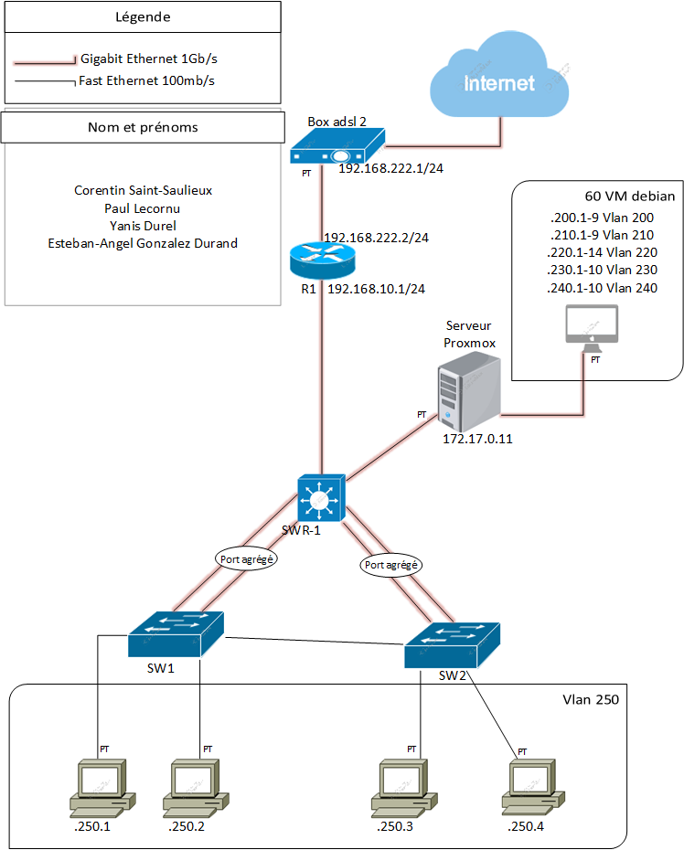
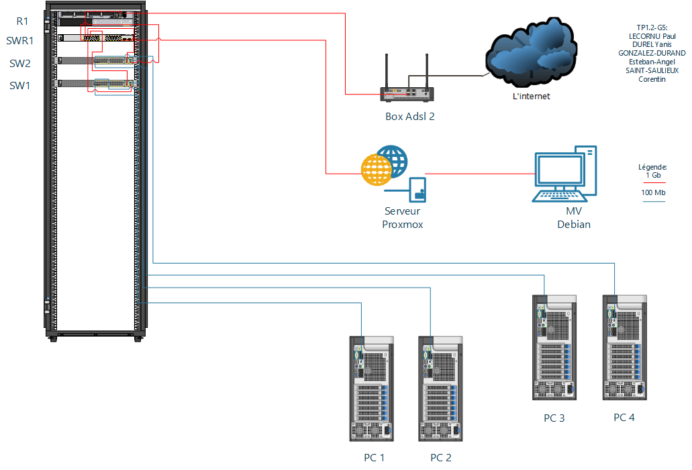

Conception et déploiement d'une infrastructure d'entreprise (Groupe 5)
Au sein d'une équipe de quatre étudiants, nous avons répondu à un cahier des charges pour l'installation d'un réseau local segmenté et virtualisé.
| Collaborateur | Responsabilités |
|---|---|
| Corentin | Architecture logique & Services réseau |
| Esteban | Topologie physique & Hyperviseur Proxmox |
| Yanis | Configuration des commutateurs L2/L3 |
| Paul | Routage statique & Coordination d'équipe |

>